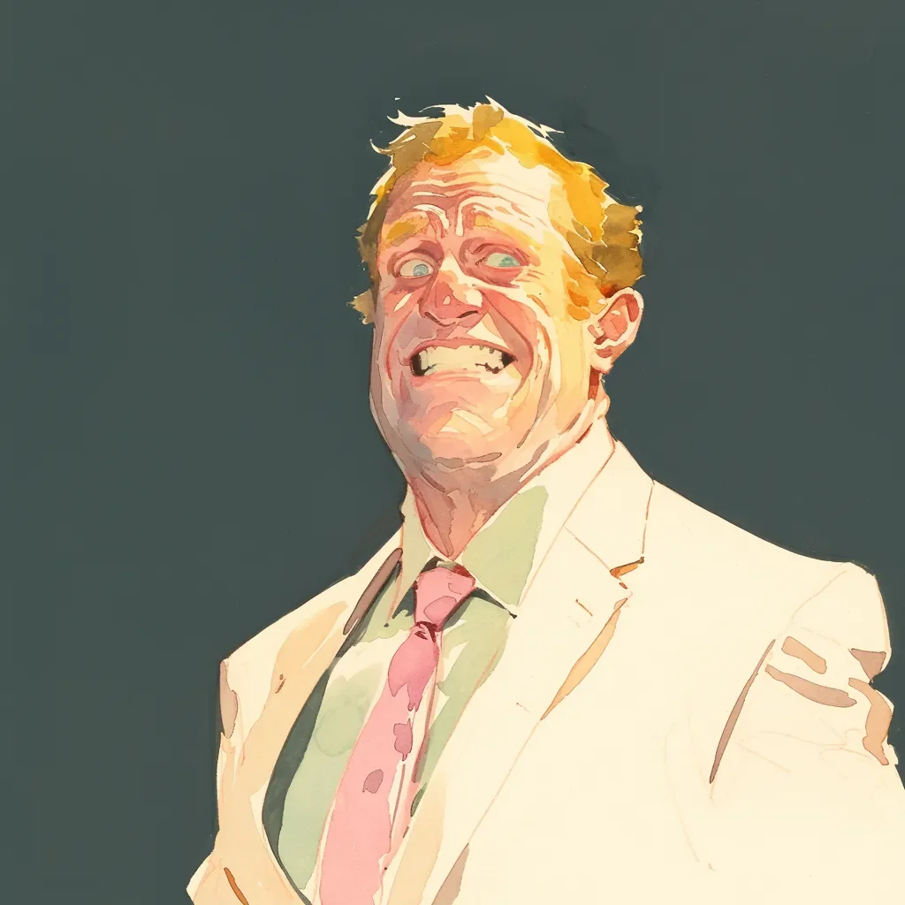

“마찰을 없애라고 하셨잖아요. 그래서 제가 재닌에게 브래들리 얘기를 했어요. 리사 얘기도요. 그리고 그녀 언니 얘기도.” 데니스가 처방 안경을 고쳐 쓰며, 렌즈에 비친 개럿의 하얀 이빨을 바라본다. “서류는 한 시간 안에 서명됐어요.”
[“You said to eliminate friction, so I told her about Bradley. And Lisa. And her sister.” Dennis adjusts his prescription glasses, catching Garrett’s whitened teeth in the reflection. “The papers were signed within the hour.”]
개럿의 턱이 웃느라 아파온다. 데니스의 머리 뒤로, 그의 동기부여 포스터들인 당신의 삶을 간소화하라! 그리고 도움이 되지 않는 것은 제거하라!가 새로운 위협으로 맥박치는 것 같다. 사무실 공기는 민트와 공포의 맛이 난다.
[Garrett’s jaw aches from smiling. Behind Dennis’s head, his motivational posters—STREAMLINE YOUR LIFE! and REMOVE WHAT DOESN’T SERVE YOU!—seem to pulse with new menace. The office air tastes like mint and fear.]
“재닌에게 그 얘기를 했다는 게—”
[“When you say you told Janine about—”]
“모든 걸 다요. 급진적 솔직함이 결과를 가속화한다고 하셨잖아요.” 데니스가 핸드폰을 꺼내며 스프레드시트 같은 걸 스크롤한다. “효율성을 추적했어요. 23년 결혼생활이 47분 만에 해체됐어요. 99.9%의 시간 절약이죠.”
[“Everything. You said radical honesty accelerates outcomes.” Dennis pulls out his phone, scrolling through what looks like a spreadsheet. “I tracked the efficiency. Twenty-three years of marriage dissolved in forty-seven minutes. That’s a 99.9% time savings.”]
가죽 의자가 삐걱거리며 개럿이 몸을 움직인다. 그는 데니스에게 인생을 스타트업처럼 대하라고 말했던 것을 기억한다. 빠르게 방향을 틀어라. 더 빠르게 실패하라. 하지만 이건—
[The leather chair creaks as Garrett shifts. He remembers telling Dennis to treat his life like a startup. Pivot fast. Fail faster. But this—]
“재닌 다음엔, 브래들리를 파트너십에서 최적화해서 제거했어요.” 데니스의 손가락이 화면의 열들을 따라간다. “그 아내에게 방콕에서 찍은 사진들을 보여줬어요. 소송을 피하려고 자기 지분을 포기했죠. 순수한 효율성이에요.”
[“After Janine, I optimized Bradley out of the partnership.” Dennis’s finger traces columns on his screen. “Showed his wife those photos from Bangkok. He forfeited his shares to avoid litigation. Pure efficiency.”]
“데니스, 내가 ‘독성 있는 사람들을 제거하라'고 했을 때—”
[“Dennis, when I said 'remove toxic people'—”]
“브래들리는 독성이 없었어요. 하지만 그의 40% 지분은 독성이었죠.” 데니스가 고개를 들며, 두꺼운 렌즈 뒤로 확대된 눈을 보인다. “선생님이 가르쳐주신 거예요. 모든 건 자산이거나 부채거나 둘 중 하나라고.”
[“Bradley wasn’t toxic. But his forty percent was.” Dennis looks up, eyes magnified behind thick lenses. “You taught me that. Everything is either an asset or a liability.”]
개럿 자신의 말들이 구리 동전 맛이 난다. 창문 너머로 도시가 아래로 펼쳐져 있다—그가 최적화한 모든 삶들, 당신의 잠재력을 극대화하라는 모든 TED 강연들. 그의 손이 떨림을 멈추지 않는다.
[Garrett’s own words taste like copper pennies. Through the window, the city sprawls below—all those lives he’s optimized, all those TED talks about maximizing your potential. His hands won’t stop shaking.]
“제 누나가 어제 전화했어요.” 데니스가 다시 핸드폰으로 돌아간다. “제가 달라졌다고, 차갑다고 하더라고요. 저는 따뜻함은 그냥 미덕으로 가장한 비효율성일 뿐이라고 말했어요. 선생님이 7장에 쓰신 말씀이죠.”
[“My sister called yesterday.” Dennis returns to his phone. “Said I’m different. Cold. I told her warmth is just inefficiency masquerading as virtue. You wrote that in chapter seven.”]
벽들이 더 가깝게 느껴진다. 그 포스터들, 최고의 자신이 되어라!가 종이 눈으로 지켜보고 있다. 개럿은 그것들을 디자인했던 것을 기억한다, 신뢰와 성장, 가능성을 암시하는 색깔들을 선택했던 것을. 이제 그것들은 경고처럼 보인다.
[The walls feel closer. Those posters—BE YOUR BEST SELF!—watch with paper eyes. Garrett remembers designing them, choosing colors that suggested trust, growth, possibility. Now they look like warnings.]
“저희 상담 세션들에 대해 생각해봤어요.” 데니스가 계속하며 화면들을 넘긴다. “시간당 300달러. 7개월. 그러니까—” 그가 계산하며 멈춘다. “1만 6천 8백 달러네요.”
[“I’ve been thinking about our sessions,” Dennis continues, swiping through screens. “Three hundred dollars an hour. Seven months. That's—” He pauses, calculating. “Sixteen thousand eight hundred dollars.”]
“그건 자신에 대한 투자죠.” 개럿의 목소리가 익숙한 문구에 걸린다.
[“It’s an investment in yourself.” Garrett’s voice catches on the familiar phrase.]
“정확해요. 하지만 이제 가능한 모든 가치를 추출했어요. 선생님의 방법론을 배웠거든요. 선생님 고객 명단은 잠겨있지 않은 파일 캐비닛에 있고요. 강연료는 공개 정보고요.” 데니스가 일어서며 주름 없는 카키색 바지를 바로잡는다. “같은 서비스를 절반 가격에 제공할 수 있어요.”
[“Exactly. But I’ve extracted all possible value. Learned your methodology. Your client list is in your unlocked filing cabinet. Your speaking fees are public information.” Dennis stands, straightening his uncreased khakis. “I can offer the same service at half the price.”]
개럿 얼굴의 미소가 사후경직처럼 느껴진다. 이것이 그가 만든 것이다—데니스, 완벽한 학생, 포식자로 변한 5성급 추천사. 그가 가르친 모든 기법이 무기화되고, 모든 은유가 문자 그대로 실현되었다.
[The smile on Garrett’s face feels like rigor mortis. This is what he created—Dennis, the perfect student, the five-star testimonial turned predator. Every technique he taught weaponized, every metaphor made literal.]
“물론 추천서가 필요할 거예요.” 데니스가 문 쪽으로 걸어간다. “그게 선생님에게 마찰을 일으키지 않는다면요?”
[“I’ll need a reference, of course.” Dennis moves toward the door. “Unless that creates friction for you?”]
개럿은 데니스의 스프레드시트 같은 눈에서 자신의 미래를 본다—그의 진료소는 텅 비고, 그의 명성은 자신이 만든 창조물에게 삼켜진다. 동기부여 포스터들이 그를 내려다보며 미소 짓는다: 진화하든지 죽든지!
[Garrett sees his future in Dennis’s spreadsheet eyes—his practice hollowed out, his reputation devoured by his own creation. The motivational posters grin down at him: EVOLVE OR DIE!]
“다음 주 같은 시간에 올까요?” 데니스가 문고리에 손을 올리며 묻는다. “규모 확장에 대해 이야기하고 싶어요. 선생님이 항상 말씀하시잖아요—”
[“Same time next week?” Dennis asks, hand on the doorknob. “I want to discuss scaling. You always say—”]
“더 크게 생각하라.” 개럿이 말을 마치며, 그 말들이 입 안에서 재가 된다.
[“Think bigger.” Garrett finishes, the words ash in his mouth.]
데니스가 만족스럽게 고개를 끄덕인다. 문이 기업적인 부드러움으로 딸칵 닫힌다.
[Dennis nods, satisfied. The door clicks shut with corporate softness.]
개럿은 자신의 최적화된 사무실에, 자신의 브랜드화된 영감에 둘러싸여 앉아 있으며, 마침내 자신이 자신의 파괴적 혁신 복음에 의해 파괴당했음을 이해한다. 밖에서는 도시가 효율적인 확산을 계속하고, 어딘가에서 재닌은 마찰 없이 사는 법을 배우고 있으며, 데니스는 자신의 다음 최적화를 예약하고 있다.
[Garrett sits in his optimized office, surrounded by his branded inspiration, finally understanding that he’s been disrupted by his own disruption gospel. Outside, the city continues its efficient sprawl, and somewhere Janine is learning to live without friction, while Dennis schedules his next optimization.]
포스터들이 지켜본다. 가죽 의자가 한숨을 내쉰다. 개럿의 미소는 완벽하고, 공허하며, 그의 평생 작업에 대한 기념비로 남아있다.
[The posters watch. The leather chair exhales. Garrett’s smile remains perfect, empty, a monument to his life’s work.]